Overview
We implemented a basic 2d shading pipeline in this project: essentially how do you go from just raw triangle information to actually drawing colored pixels on a screen. I've worked with graphics before this, so I knew the general gist of how you can project from a scene onto a screen, but I still learned quite a lot from this project. I finally learned what anti-aliasing actually is, and the techniques involved with getting it to work well. I also finally learned what barycentric coordinates are and their significance to rendering.
Section I: Rasterization
Part 1: Rasterizing single-color triangles
Triangles in this project are naively rasterized by iterating over a grid of pixel values, and sampling to see if the pixel is within the given triangle. Given the three corner points of the triangle, my algorithm computes the triangle bounding box, by finding the min and max y and x values, and checking the center of each pixel in this bounding box to see if it is within the triangle. If the sample is in the triangle, it calls color_pixel to color the pixel.
Part 2: Antialiasing triangles
I implemented supersampling by essentially breaking up every pixel into multiple sub pixels, (4, 9, or 16). Each sub-pixel is tested to see if it is inside the triangle, and the result of the computation is temporarily stored in a sub_pixel matrix. The actual value of the pixel is computed by averaging the values in this sub-pixel matrix. This process effectively fakes having a higher resolution of pixels, resulting in less aliasing artifacts.
|
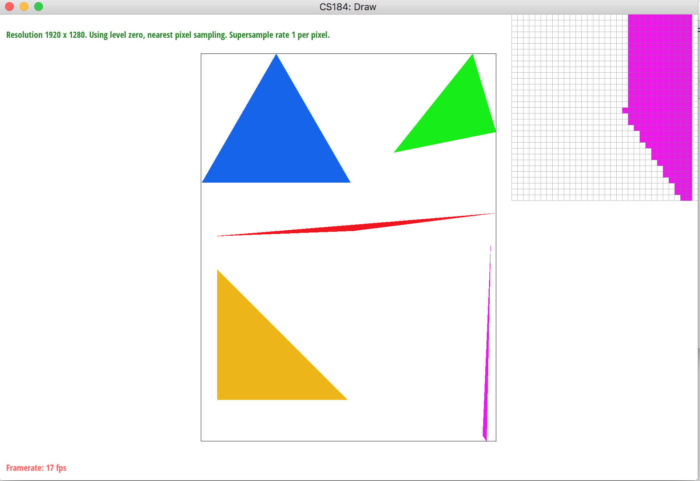
No supersampling.
|
 4 supersamples.
4 supersamples.
|
|
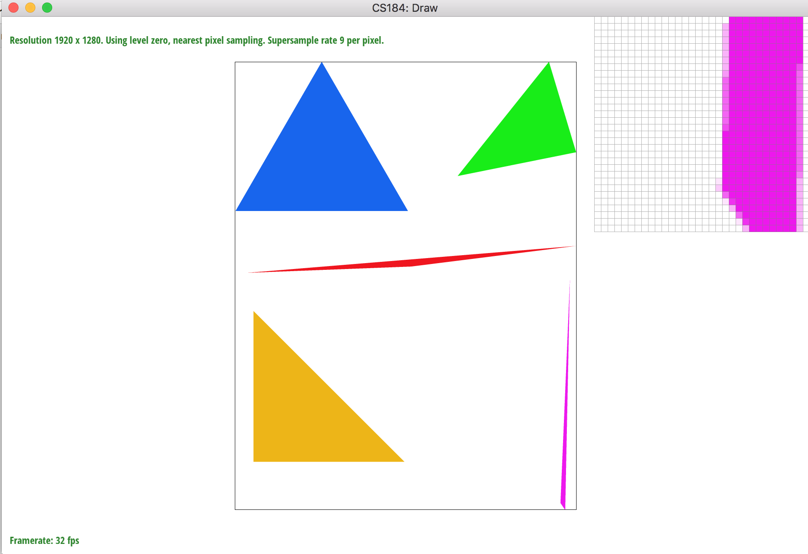
9 supersamples.
|
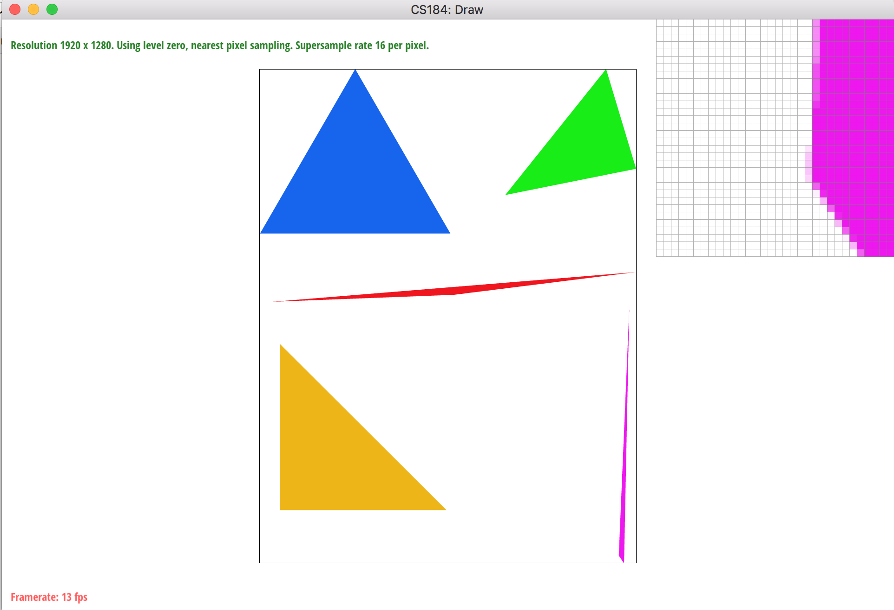
16 supersamples.
|
Part 3: Transforms
|
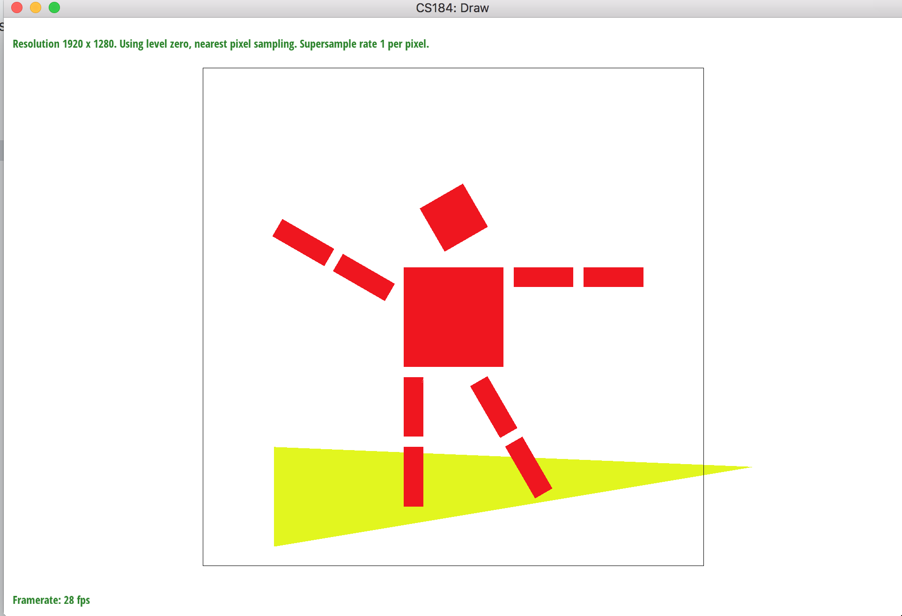
This is my robot. He is surfing.
|
Section II: Sampling
Part 4: Barycentric coordinates
Barycentric coordinates are an elegant way of representing a points location within a triangle. If a point is within a triangle, it can be represented as a weighted sum of the vertices of the triangle (the weights being alpha, beta, and gamma respectively). The image below visualizes this: each vertex has a color (r,g,b), and each sample point within the triangle is colored based on the barycentric coordinate.
|
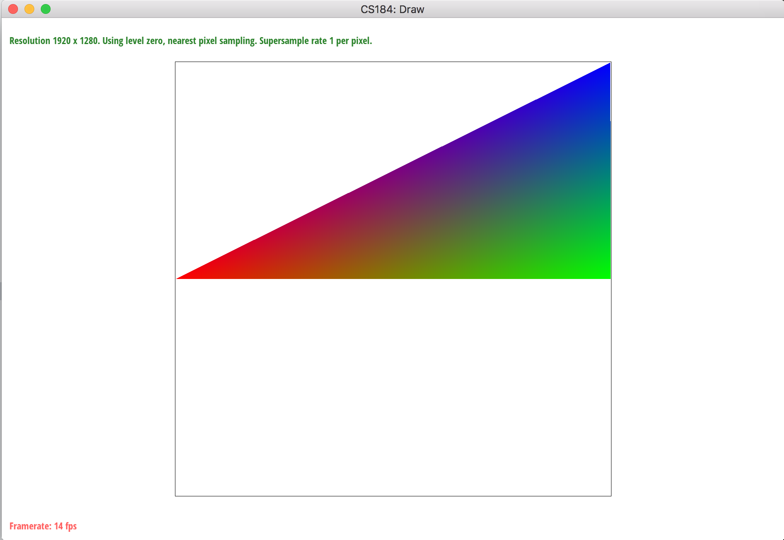
Triangle showing interpolation.
|
Part 5: "Pixel sampling" for texture mapping
Triangle sampling with textures requires a mapping from triangle vertices to a UV space on a texture. When pixels are sampled from within the triangle, their color is computed by first computing the barycentric coordinates of the sample point, and then interpolating the UV coordinates of each triangle vertex to get the sample point UV. The UV coordinates of the sample point are then multiplied by the width and height of the texture to create indices into the texture itself. These indices are then used to return the RGBA values at that point in the texture. In this part of the project we explored two ways to return the RGBA values from the texture given UV coordinates. Nearest sampling returns the value of the pixel nearest to the UV coordinates, (nearest just being the floating point UV coordinates rounded down to an int.) Bilinear on the other hand, looks at the four nearest pixel values around the sample point, and calculates the relevant RGBA value by interpolating those four pixels values, weighting by the sample points proximity to the pixels centers.
There are several differences in these images: but what it comes down to is essentially bilinear pixel sampling results in more clear renders. This is because of a couple main things: bilinear sampling samples more pixels then nearest neighbor, and also accounts to how close a sample is to a pixel with interpolation. Nearest neighbor just rounds indiscriminately. Bilinear sampling results in cleaner lines, at the cost of a little bit of blurring. In these images in particular, around the smaller and thinner lines, bilinear sampling results in a much clearer image.
|
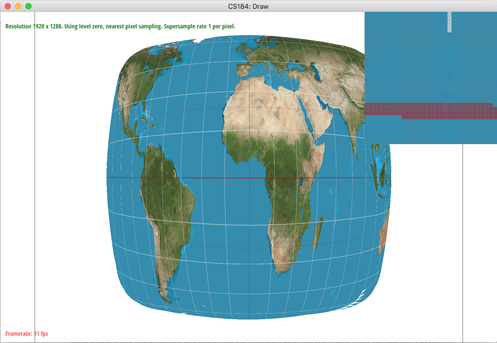
Nearest neighbor, no supersampling.
|
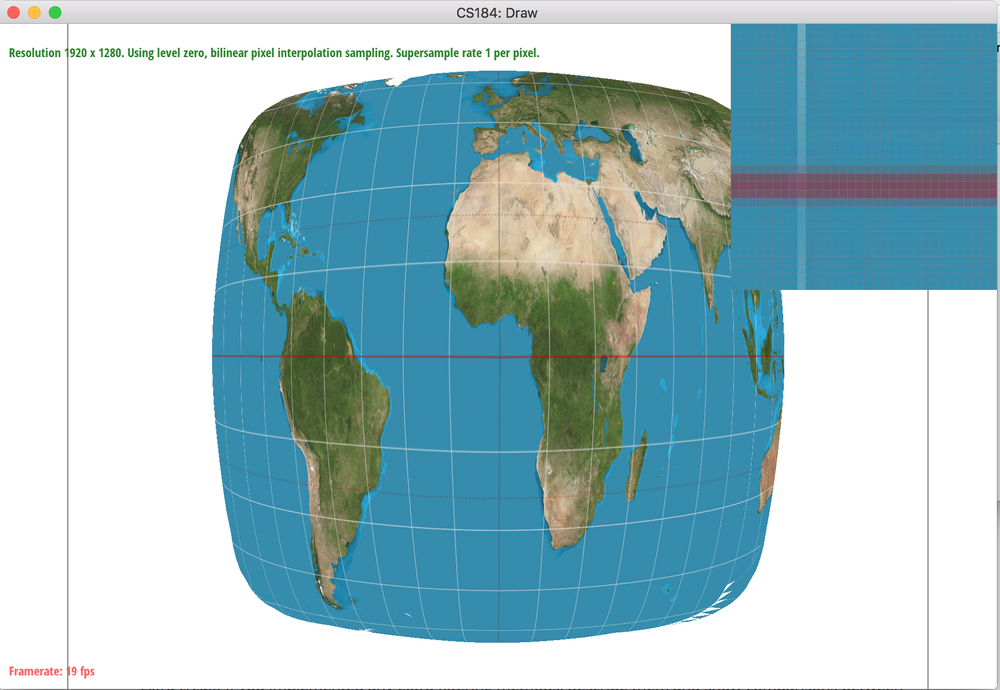
Bilinear sampling, no supersampling
|
|
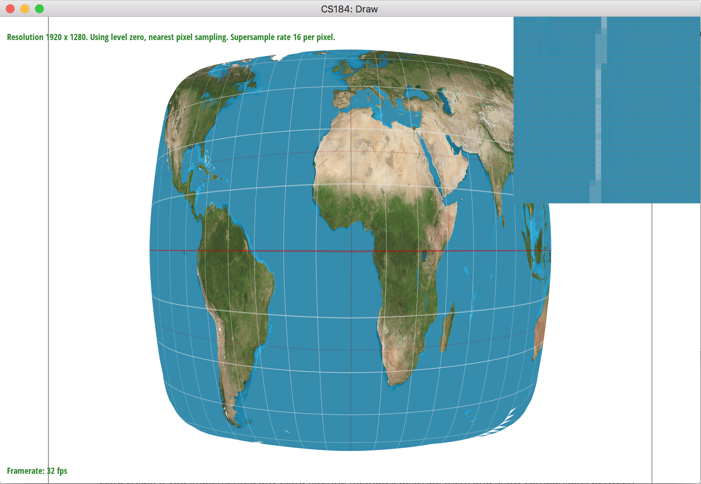
Nearest neightbor, 16x supersampling.
|
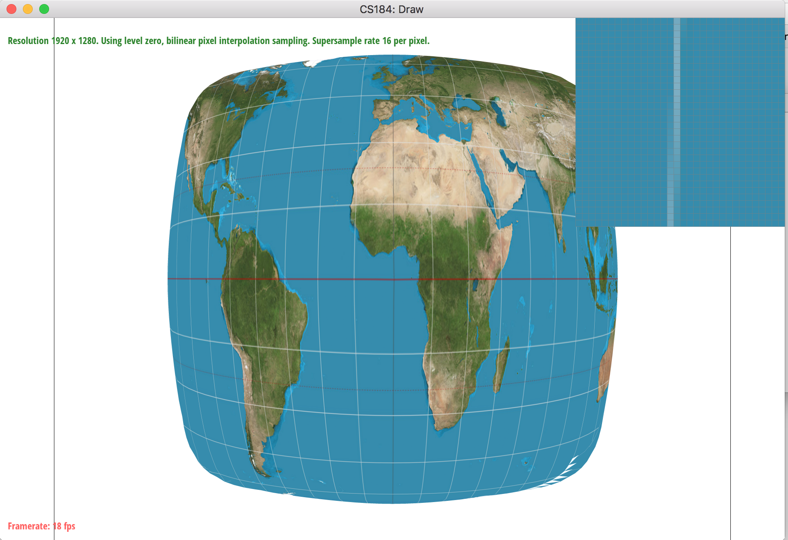
Bilinear, 16x supersampling.
|
Part 6: "Level sampling" with mipmaps for texture mapping
Level sampling involves creating mipmaps (different resolution levels )for a texture and selecting the level based on what level of detail would suit the color sample the best. We implement level selection in this project based on the gradient around the sample in the triangle. If the uv points around the sample are far away, it means the gradient is large, resulting in a lower-level being used. This large gradient can also be thought of as projecting the screen pixel down onto the texture, and seeing how many pixels it takes up on the actual texture. The higher the gradient (the larger the projection), the lower the level that will be selected.
For tri-linear sampling, the algorithm selects the two layers that are closest to the 'L' value calculated from the relevant gradient. The algorithm then gets bilinear colors from these two layers, (using a standard sample_bilinear call). The algorithm then finally interpolates these two colors based on the weighted distance from the two layers. The weight is calculated by taking the difference between the returned L value and the two layers that were selected.
The algorithms can be ranked in the following way:
1. Nearest pixel sampling without level sampling: uses the lowest amount of memory and is the fastest. This is also the most naive implementation of rasterization, and as a result, this algorithm also has the most aliasing artifacts at all levels of zoom. As far as procedure calls go, if super-sampling is implemented, the algorithm will do sampling_rate * width * height procedure calls to get all the pixel colors it needs to render.
2. Nearest pixel sampling, with level sampling: This algorithm has the same speed as nearest pixel sampling, although needs more memory to hold the texture mipmaps.
3. Bilinear pixel sampling without level sampling: this algorithm slower than nearest pixel sampling because it samples 4 texture pixels vs just one. If super sampling is on, it actually does sampling_rate * 4 texture accesses * width * height procedure calls to get it's relevant pixel values to render.
4. Bilinear pixel sampling with level sampling: this algorithm is the same speed as the other bilinear pixel sampling algorithm, but on top of doing the sampling_rate * 4 texture reads, also needs to use memory for the texture mipmaps. It's speed is the same as bilinear pixel sampling.
5. Trilinear sampling: This algorithm is the slowest, but most aliasing power. It uses both memory for mipmaps, as well as the heavy access pattern that bilinear pixel sampling uses. On top of that, it is actually does twice as many memory accesses as bilinear pixel sampling, (as it has two bilinear sampling calls in each of it's sampling calls).
I guess in conclusion, for anti-aliasing at least, the better you want your iamge to be, the slower and more memory intensive your algorithm will also be.
 Level zero, nearest pixels sampling. Aliasing artifacts seen.
Level zero, nearest pixels sampling. Aliasing artifacts seen.
|
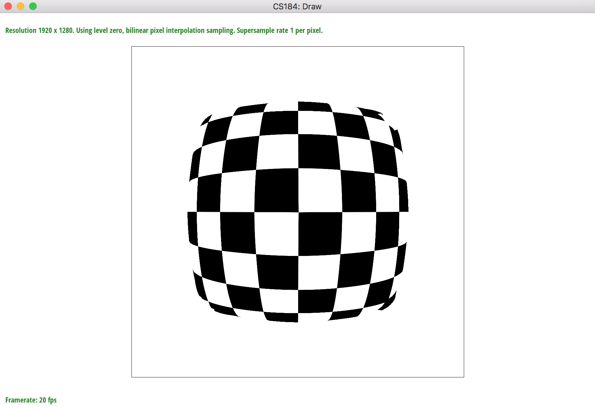
Level zero, bilinear pixels sampling. Less aliasing.
|
|
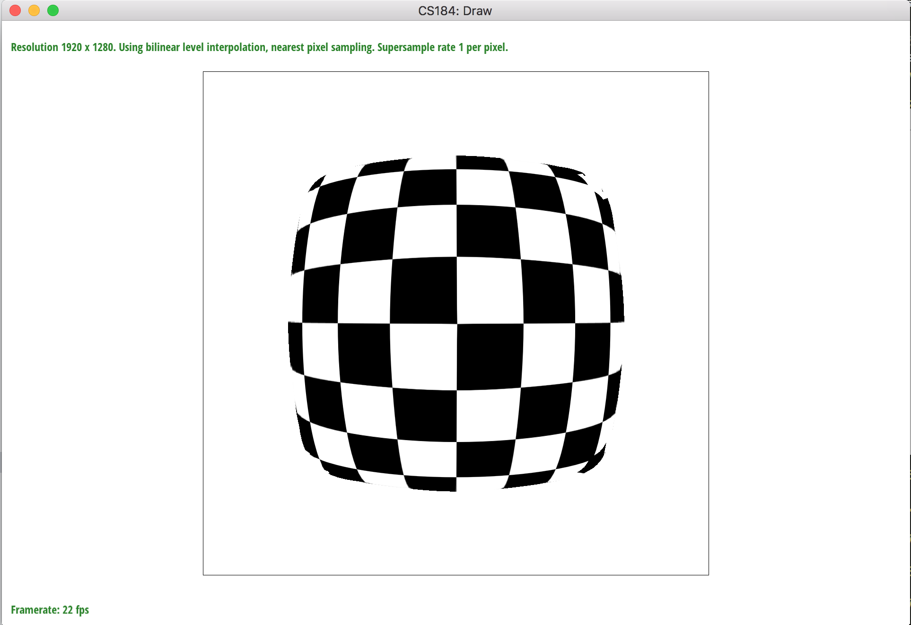
Nearest level sampling, better results than naive nearest pixel sampling.
|
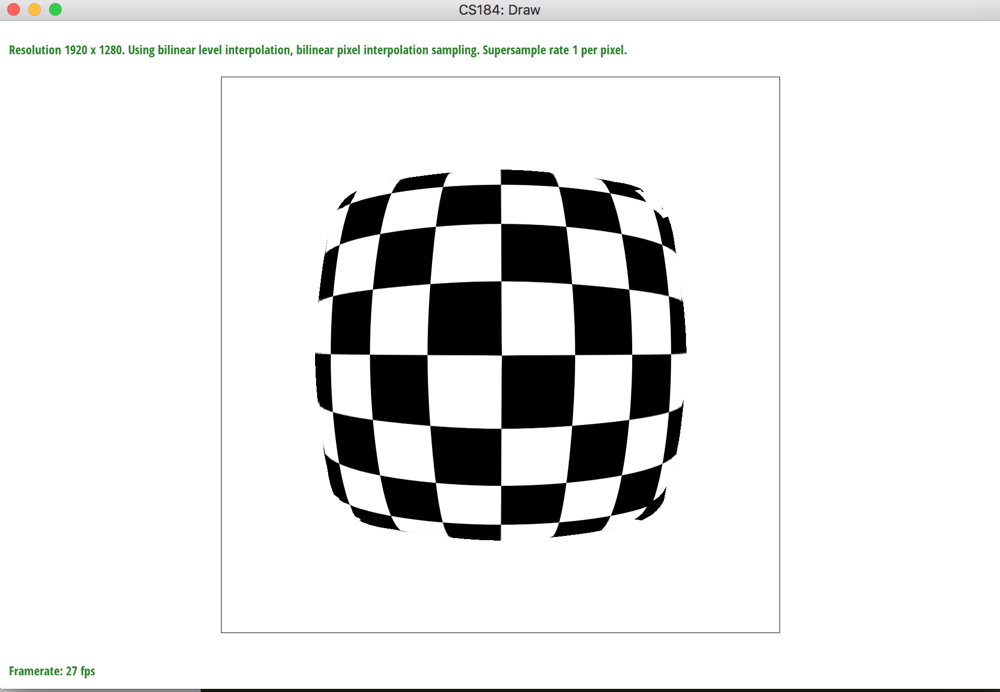
Nearest level sampling, bilinear pixel sampling. Less aliasing then standard bilinear pixel sampling, but also some strange smearing artifacts when gradients jump between levels.
|
|
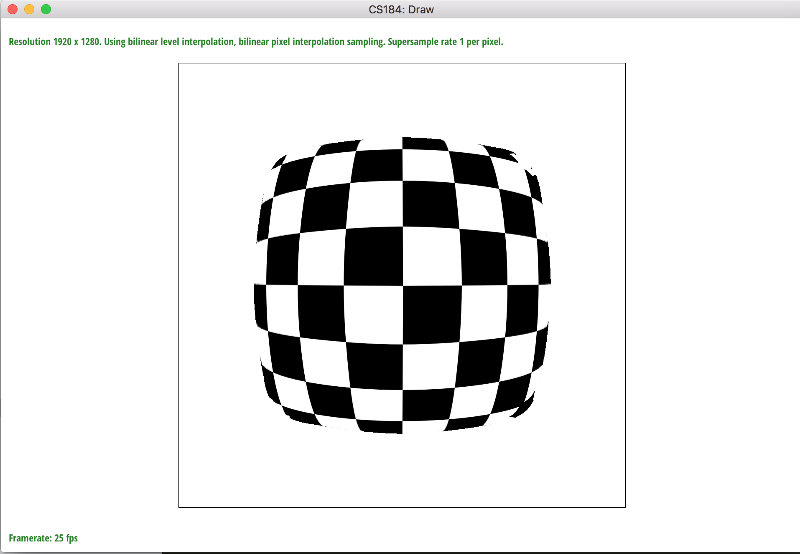
Trilinear, Least aliasing artifacts, smooth gradients at most points in the picture. (Gradients effectively interpolated)
|
Section III: Art Competition
I thought it might be cool to try to make a crystal looking structure with only triangles. I set out first to figure out what that would look like, so I 3D modeled a person, decimated down the mesh, and did a render with a crystal material to create a reference. I next imported this illustrator, and spent the next five hours (seriously it took five hours .____.), creating triangles over the image. After quite a while, I had this final SVG, and added in this little optical illusion to make it look like it was reaching out of the frame into the world.
Part 7: Draw something interesting!